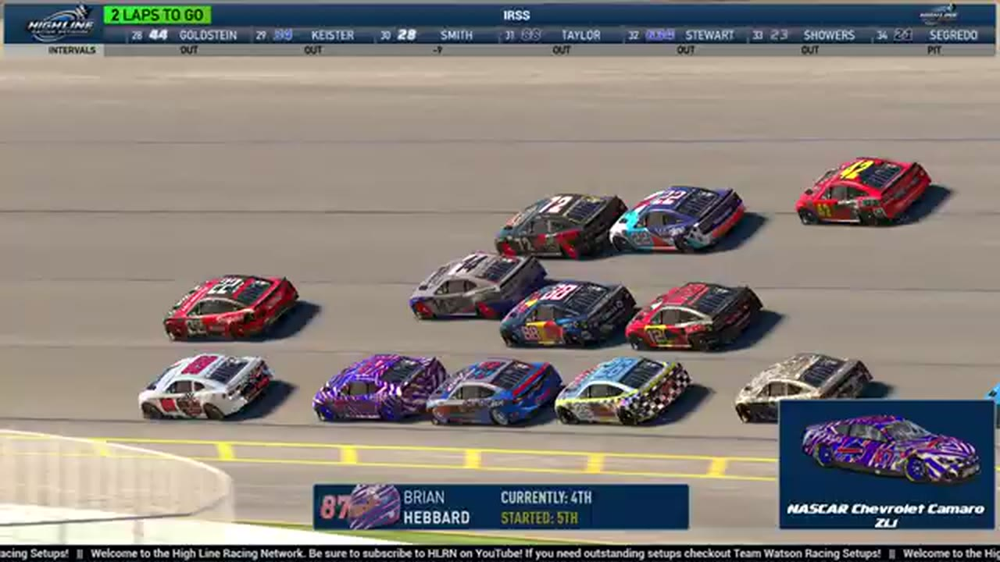

Shawn Stamper
Team assignment not stated in the structured owner record.
1 RECOVERED WIN / EVERY ONE RECEIPTED
- Official files
- 17
- Central editions
- 1
- Exact tape cues
- 16
- Accepted podiums
- 1
Shawn Stamper's accepted HLRN result file contains 1 supported feature win and 1 recovered podium: S1 R15 at iRacing Superspeedway (P1). A consistently stated team affiliation remains open for owner review. The currently indexed source window runs from November 17, 2025 through July 20, 2026.
The searchable official-broadcast footprint covers 17 race files, with the heaviest repeated track signal at Daytona. 1 Highline Central edition and 16 primary-race jump points connect the result ledger back to the tape. The densest direct-tape categories are strategy (4 cues) and incident (4 cues). Those counts describe where the name is easiest to find; they are not fault, pace, or performance grades. A source-attributed car frame is published with its original video and timestamp. That is the current discovery map for Shawn Stamper.
No unsupported start total, full points total, car number, or finishing position is added around those receipts. The dossier grows from accepted results and source appearances, not from broadcast-name volume. Separately, 12 Highline Live files sit on the bonus shelf and never enter the official season ledger. The displayed name is labeled transcript normalized; that status remains visible so an owner roster can strengthen or correct the identity without rewriting the evidence trail. Those boundaries define Shawn Stamper's public HLRN file.
10 featured race-tape cues
These are discovery routes into complete HLRN broadcasts, not performance grades or inferred results.
- S1 / R15 · RESULT
Shawn Stamper is confirmed atop the iRacing Superspeedway results
The primary broadcast's podium readout records Shawn Stamper, Jerry Bergeron, and Larkin Boyer at iRacing Superspeedway.
iRacing Superspeedway - S1 / R15 · FINISH
Shawn Stamper survives the extra lap at iRacing Superspeedway
The booth first thinks the race is over, catches the extra lap, and stays with Shawn Stamper as he holds the lead through the final wreck and receives the corrected live winner call.
iRacing Superspeedway - S1 / R13 · STAGE
Stage 2 scoring discussion at Dover
S1 / R13 at 1:09:07: The broadcast enters a stage-scoring discussion at Dover with Shawn Stamper in the scoring call. The clip preserves the on-air timing or points call without promoting it into a complete stage result; the accepted feature result ledger remains separate.
Dover - S1 / R15 · BATTLE
The iRacing Superspeedway lead pack goes three wide
S1 / R15 at 2:16:46: The iRacing Superspeedway pack compresses three wide while Brian Hebert, Larkin Boyer, and Shawn Stamper are named on the call. The chapter keeps the live battle intact and makes no finishing-order claim.
iRacing Superspeedway - S1 / R10 · RESTART
Kansas rebuilds its final overtime order
The replay closes on Shawn Stamper's damaged car contacting the No. 75. HLRN then returns live to Brandon Bikey ahead of Trevor Haley and Cory Cook while race control confirms one last restart attempt.
Kansas - S2 / R3 · STRATEGY
Chicagoland's repair cycle reshuffles the contenders
Shawn Stamper regains the lead lap while Nick Bowman remains on pit road for repairs or a possible tow. Donny Beach is a lap down, Cory Cook falls back, and Ethan Moreno inherits the front as Bryce Hinton rejoins.
Chicagoland - S2 / R1 · STRATEGY
Sebastian Michaels brings Daytona damage through the pit cycle
HLRN returns live to pit road, checks Shawn Stamper for his fans, and then follows Sebastian Michaels's damaged car out of its stall. The card records repair context rather than a Stamper pit-strategy claim.
Daytona - S1 / R7 · STRATEGY
Randy Switzer enters the Michigan pit-strategy swing
S1 / R7 at 1:39:01: Pit timing starts to reorganize the field, with Randy Switzer, Trevor Haley, and Shawn Stamper named in the sequence. The clip is a strategy receipt from the primary Michigan broadcast, not a reconstructed scoring sheet.
Michigan - S1 / R3 · STRATEGY
Tire choices redraw the Charlotte order
S1 / R3 at 1:07:41: Tire choices redraw the running order, with Shawn Stamper named in the sequence. The clip is a strategy receipt from the primary Charlotte broadcast, not a reconstructed scoring sheet.
Charlotte - S2 / R1 · INCIDENT
Timothy Tyler spins into Daytona traffic as the caution falls
Shawn Stamper remains in the race before a new wreck brings out the yellow. Trevor Haley receives a damage signal, but the first replay centers Timothy Tyler's No. 83 spinning up the track into traffic.
Daytona
Recent editions connected to Shawn Stamper
Verified team history is not consistently stated. Complete starts, finishes, and points remain open beyond the recovered results. Name normalization remains reviewable against owner records.